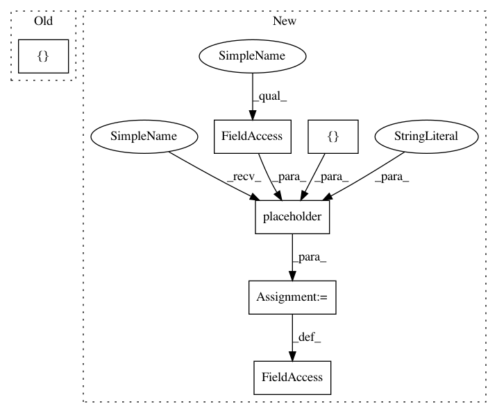

a1926719a8174e17f9b002c6369880f11b5dab88,tensorforce/value_functions/deep_q_network.py,DeepQNetwork,create_training_operations,#DeepQNetwork#,121
Before Change
name="target_values")
with tf.name_scope("training"):
action_indices = tf.squeeze(np.dstack([tf.range(self.batch_size), self.actions]))
batch_q_values = tf.identity(self.training_network, name="batch_q_values")
q_values_actions_taken = tf.gather_nd(batch_q_values, action_indices)
After Change
with tf.name_scope("training"):
self.q_targets = tf.placeholder(tf.float32, [None], name="q_targets")
self.q_values_actions_taken = tf.placeholder(tf.float32, [None], name="q_values_actions_taken")
// Mean squared error
loss = tf.reduce_mean(tf.square(self.q_targets - self.q_values_actions_taken), name="loss")
grads_and_vars = self.optimizer.compute_gradients(loss)
In pattern: SUPERPATTERN
Frequency: 3
Non-data size: 6
Instances
Project Name: reinforceio/tensorforce
Commit Name: a1926719a8174e17f9b002c6369880f11b5dab88
Time: 2016-11-13
Author: mi.schaarschmidt@gmail.com
File Name: tensorforce/value_functions/deep_q_network.py
Class Name: DeepQNetwork
Method Name: create_training_operations
Project Name: arnomoonens/yarll
Commit Name: 8b97a5a397372f622bd2c06924c75b1104008698
Time: 2018-05-29
Author: arno.moonens@gmail.com
File Name: agents/reinforce.py
Class Name: REINFORCE
Method Name: __init__
Project Name: reinforceio/tensorforce
Commit Name: a1926719a8174e17f9b002c6369880f11b5dab88
Time: 2016-11-13
Author: mi.schaarschmidt@gmail.com
File Name: tensorforce/value_functions/deep_q_network.py
Class Name: DeepQNetwork
Method Name: create_training_operations
Project Name: rail-berkeley/softlearning
Commit Name: 75cba1be3373908e6a1a971778a14e40b240ce4f
Time: 2018-01-26
Author: haarnoja@users.noreply.github.com
File Name: softqlearning/misc/nn.py
Class Name: MLPFunction
Method Name: __init__